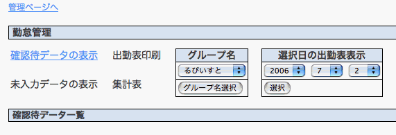
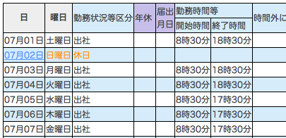
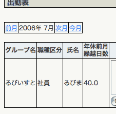

RubyOnRails を使ってみる 【第 8 回】 Rails はまり道
書いた人：Yu_kata
はじめに
昨年より、Ruby on Rails と Ruby の勉強を始めた Yu_kata といいます。
今回の記事では、学習しながら作っていった Rails アプリの開発コードの変遷を紹介します。 これから Rails を学ぼうとしている方の学習の参考になれば幸いです。
なお、実際の Rails アプリ (簡略版) もご用意しましたので、ご参照ください。 workmanagement.tar.gz
本記事中、初期コードとなっているコードも、コントローラ・モデルはファイル名の頭、ビューはフォルダ名の頭に old_ と付けた形で収録してあります (ActiveRecord2 の項、改善後のコードその 1 だけは、old_timecard ではなく old_management に入れてあります)。
ちなみに、作っていた Rails アプリは社内で勤怠を管理するアプリです。
ActionController
初期コード・画面

- app/views/management/_date_user_select.rhtml
<%= start_form_tag :action =>'date_user_list' %>
<table class='confirm'>
<tr>
<th>選択日の出勤表表示</th>
</tr>
<tr>
<td><%= select_date(session[:currentdate],:use_month_numbers => true) %></td>
</tr>
<tr>
<td>
<%= submit_tag "選択" %>
</td>
</tr>
</table>
<%= end_form_tag %>
- app/controllers/management_controller.rb
class ManagementController < ApplicationController
before_filter :login_required,:access_limitation
before_filter :session_nil,:only =>[:show,:edit,:r_index]
def date_user_list
unless session[:choice_date]
session[:choice_date]={:year => params[:date][:year],
:month => params[:date][:month],
:day => params[:date][:day]}
end
@timecard_pages,@timecards = paginate(:timecard,
:order =>'input_date',
:include => [:workcode],
:conditions => ["input_date= ?",
Date.new(session[:choice_date]].to_i,
session[:choice_date][:month].to_i,
session[:choice_date][:day].to_i)])
@workcodes=Workcode.find_all
end
protected
def session_nil
session[:choice_user]=nil
session[:choice_date]=nil
end問題点
セレクトボックスから日付を選択、その日付の勤怠データを一覧表示する画面に遷移という流れです。 上記のコードでは、session を使用して、選択されたパラメータを保持・遷移させています。 edit や r_index といった別アクションに遷移したら session をクリアするよう、session_nil というメソッドを before_filter に登録しています。
しかし、このやり方には問題があります。
そこでブラウザの「戻る」ボタンを使った場合はどうなるでしょうか？ 1 その場合、session がクリアされず、セレクトボックスから別の日付を新たに選択しても、前に選んだ日付のデータが表示されることになります。
改善後コード・画面

- app/views/management/_date_user_select.rhtml
<%= start_form_tag :action =>'through_date_user_list' %>
<table class='confirm'>
<tr>
<th>選択日の出勤表表示</th>
</tr>
<tr>
<td><%= select_date(session[:currentdate],:use_month_numbers => true) %></td>
</tr>
<tr>
<td>
<%= submit_tag "選択" %>
</td>
</tr>
</table> <%= end_form_tag %>- app/controllers/management_controller.rb
def through_date_user_list
redirect_to :action =>'date_user_list',
:year => params[:date][:year],
:month => params[:date][:month],
:day => params[:date][:day]
end
def date_user_list
@workcodes=Workcode.find_all
@timecard_pages,@timecards = paginate(:timecard,
:order =>'input_date',
:include => [:workcode],
:conditions => ["input_date= ?",Date.new(params[:year].to_i,
params[month].to_i,
params[:day].to_i)])
end- config/routes.rb
# year/month/dayを表示
map.connect 'management/:action/:year/:month/:day',
:controller => 'management',
:action => 'd_u_list',
:requirements => {:year => /(19|20)\d\d/,
:month => /[01]?\d/,
:day => /[0-3]?\d/},
:day => nil,
:month => nil改善点
ルーティングを良く分かっていなかったので、 id, controller, action以外の任意のパラメータを渡せることに気づかず、なんでも session で対応しようとしていました。 改善後は、上記のように、ルーティングを使って日付のパラメータを渡すように修正しています。
ついでに、date_user_list?day=2&month=7&year=2006 という表示を、Rails 風に 2006/07/02 と表示するよう、config/routes.rb にルーティング設定を追加してあります。
session を使う必要性がなくなったので、session_nil は不要になりました。 ブラウザの「戻る」を使った場合でも、ちゃんと選択された日付が表示されるようになっています。
また、副作用として、日付やメンバのセレクトボックスを常に表示しても問題なくなりました。
ActionView
初期コード・画面

- app/views/timecard/_list.rhtml
<% col = "#D6ECFA"
white = "white"
bool = true
for timecard in @timecards
bool = !bool
color = case bool
when true
col
else
white
end
%>
...問題点
テーブルで1行毎に色を変えて表示する為、rhtmlにこのようにメソッドをべた書きしていました。 しかし、同じように表示させたいテーブルが出てきた場合、毎回書かなければいけなくなります。
改善後コード
- app/views/timecard/_list.rhtml
<%- for timecard in @timecards -%>
<tr bgcolor="<%= cycle("white", "#D6ECFA") %>">
...改善点
この様な場合、ヘルパモジュールにメソッドとして定義するのが妥当です。 ですが、Rails に cycle というメソッドが追加されたので、そもそもヘルパに定義する必要もなくなりました。
便利なメソッドが追加されていたりするので、最新版は追いかけていた方が幸せになれます。 自分で追いかけるのが大変という方は、くまくまーさんや secondlife さん、masuidrive さんのブログを見ておくといいと思います。
ActiveSupport
初期コード
- app/controllers/timecard_controller.rb
protected
def select_timecards_and_sum
@start_month_first=Date.new(session[:currentdate].year,session[:currentdate].month,1)
@next_month_first=Date.new(session[:currentdate].year,session[:currentdate].month,1)>>1
@timecards =
session[:user].timecards.find_month(@start_month_first,
@next_month_first)
@previous_timecards =
session[:user].timecards.find_month(Date.new(session[:currentdate].year,1,1),
@start_month_first)問題点
上記のように日付を生成する時に毎回 Date.new(year,month,day) と冗長に書いていました。 各所の find で日付を条件として使っていたため、記述するのが相当面倒で無駄な記述が発生してしまいました。
改善後のコード
- app/controllers/application_controller.rb
def conv_start_month(date)
date.to_time.beginning_of_month.to_date
end
def conv_end_month(date)
date.to_time.end_of_month.to_date
end
def conv_prev_month(date)
date.to_time.last_month.end_of_month.to_date
end
def conv_start_year(date)
date.to_time.beginning_of_year.to_date
end
def conv_end_year(date)
date.to_time.beginning_of_year.months_since(11).end_of_month.to_date
end- app/controllers/timecard_controller.rb
protected
def select_timecards_and_sum
@timecards =
session[:user].timecards.find_month(conv_start_month(session[:currentdate]),
conv_end_month(session[:currentdate]))
@total_time_view=
session[:user].timecards.overtime_total_sum(conv_start_month(session[:currentdate]),
conv_end_month(session[:currentdate]))改善点
ActiveSupport の Time 拡張を知って、ApplicationController に上記のメソッドを追加しました。 その結果、各所で記述量が減りました。 ActiveSupport には、他にも便利なメソッドがたくさんあるので、一通り目を通しておくといいと思います。
ActiveRecord1
初期コード・画面
- app/views/timecard/_list.rhtml
<td><%=h wday_kanji(timecard.input_date.wday) %>曜日</td>
<td><%=h timecard.workcode.workcode_name %></td>
<%- end -%>
<td><%=h timecard.workcode.use_time %></td>
<%- unless timecard.request_date.nil? -%>
<td><%=h timecard.request_date.strftime("%m月%d日") %></td>
<%- else -%>
<td><br /></td>
<%- end -%>- app/models/timecard.rb
class Timecard < ActiveRecord::Base
belongs_to :user
belongs_to :workcode
def self.find_month(start_month_date,next_month_first)
find(:all,
:conditions => ["input_date >=? AND input_date < ?",
start_month_date,next_month_first],
:order => "input_date")
end問題点
上記のコードは app/controllers/timecard_controller.rb の index などから呼ばれ、一月分の勤怠データを表示しています。 一見すると問題なさそうに見えます。
しかし、実際にアクセスして、log/development.log に記録されたログを見てみると、結構な量の SQL が発行されています。 これは、関連するテーブルを参照する度に SQL が発行されているためです。 この場合、_list.rhtml の timecard.workcode で、workcode テーブルに対する SQL が発行されています。
確かに SQL がたくさん発行され、パフォーマンスが落ちてるかもしれないけど、 表示されているし、それの何が問題なのと思われるかもしれません。 しかし、もっと呼びださなければいけない関連テーブルがあった場合はどうでしょうか？ 今回のサンプルでは簡略化しているため、モデルに定数として書いてあるマスタや省略したものがありますが、実際のアプリでは、さらに多くの関連テーブルが存在しています。 それなりのアプリを作ろうとした場合にも、テーブル数は結構な数になると思います。 これらを表示させようとした場合、パフォーマンスに多大な影響を与えることになってしまいます。
改善後のコード
def self.find_month(start_month_date,end_month_date)
find(:all,
:include => [:workcode],
:conditions => ["input_date >=? AND input_date <= ?",
start_month_date,end_month_date],
:order => "input_date")改善点
実は :include オプションを使えばいいだけです。 2
上記コードの様に、:include を使えば一回の SQL で関連テーブルデータもまとめて取ってきてくれます。 恥ずかしい話ですが、私の場合、そもそも :include オプションというか、SQL の join を良く理解していなかったというのが根本的な原因でした。 この為、‘SQL 書き方ドリル’を読んで、手を動かしながら SQL を勉強しました。
ActiveRecord2
初期コード・画面

- app/views/timecard/index.rhtml
<%- unless @vacation.nil? -%>
<td><%=h @previous_month_sum %></td>
<%- else -%>
<td><br /></td>
<%- end -%>- app/controllers/timecard_controller.rb
protected
def select_timecards_and_sum
-省略-
@vacation=session[:user].vacations.find_by_year(session[:currentdate].year)
@previous_month_sum=@vacation.yearly_vacation - vacation_sum(@previous_timecards)
@current_month_sum=vacation_sum(@timecards)
@overtime_total_view=overtime_total_sum(@timecards_confirm)
end
protected
def vacation_sum(array)
vacation=0
array.each do |array|
unless array.workcode.use_time==nil
vacation=vacation+array.workcode.use_time
end
end
return vacation
end問題点
画面の年休日数や、一月の時間外勤務時間等、合計を表示させるためのコードです。 開発を始めた当初、ActiveRecord に count はあったのですが、sum はありませんでした。 また、私がそもそも sum 自体を SQL で書いたことがありませんでした。 そのため、合計を出すためだけに、find で取得した ActiveRecord オブジェクトを、timecard_controller.rb に定義したメソッドで each を使って回すという、コストのかかることをしてしまっています。
改善後のコードその1
- app/views/timecard/index.rhtml
<%- unless @vacation.nil? -%>
<td><%=h @vacation.yearly_vacation - @previous_month_sum[:vac_sum].to_f %></td>
<%- else -%>
<td><br /></td>
<%- end -%>- app/models/timecard.rb
def self.vacation_sum(user_id,start_month_date,next_month_first)
find_by_sql(["SELECT user_id,SUM(workcodes.use_time) AS vac_sum
FROM timecards
LEFT JOIN workcodes
ON timecards.workcode_id = workcodes.id
WHERE
timecards.user_id = ?
AND
input_date >= ?
AND
input_date <? GROUP BY user_id",
user_id,start_month_date,next_month_first]).first
end- app/controllers/timecard.rb
protected
def select_timecards_and_sum
-省略-
@vacation=session[:user].vacations.find_by_year(session[:currentdate].year)
@previous_month_sum=
Timecard.vacation_sum(session[:user].id,
Date.new(session[:currentdate].year,1,1),
@start_month_first)
@current_month_sum=
Timecard.vacation_sum(session[:user].id,@start_month_first,
@next_month_first)
if @previous_month_sum.nil?
@previous_month_sum ={'vac_sum' => 0,'user_id' => @user.id }
if @previous_month_sum[:vac_sum].nil?
@previous_month_sum[:vac_sum]=0
end
end
if @current_month_sum.nil?
@current_month_sum ={'vac_sum' => 0,'user_id' => @user.id }
if @current_month_sum[:vac_sum].nil?
@current_month_sum[:vac_sum]=0
end
end改善点その1
SQL をそこそこ理解し、書けるようになったので、find_by_sql で上記のように書き、controller に書いていた先のメソッドが不要になっています。 また、コスト的にも SQL 一回の取得で済んでいます。 しかし、find_by_sql で取得しているため、ビューへの表示のために処理が若干必要になってしまっています。
改善後のコードその2
- app/views/timecard/index.rhtml
<%- unless @vacation.nil? -%>
<td><%=h @vacation.yearly_vacation - @previous_month_sum.to_f %></td>
<%- else -%>
<td><br /></td>
<%- end -%>- app/models/timecard.rb
def self.vacation_sum(start_month_date,end_month_date)
sum('workcodes.use_time',
:conditions =>["input_date >= ? AND input_date <= ? ",start_month_date,end_month_date],
:joins => "LEFT JOIN workcodes ON timecards.workcode_id = workcodes.id" )
end- app/controllers/timecard_controller.rb
protected
def select_timecards_and_sum
-省略-
@total_time_view=
session[:user].timecards.overtime_total_sum(conv_start_month(session[:currentdate]),
conv_end_month(session[:currentdate]))
@vacation=session[:user].vacations.find_by_year(session[:currentdate].year)
@previous_month_sum=
session[:user].timecards.vacation_sum(conv_start_year(session[:currentdate]),
conv_prev_month(session[:currentdate]))
@current_month_sum=
session[:user].timecards.vacation_sum(conv_start_month(session[:currentdate]),
conv_end_month(session[:currentdate]))
end改善点その2
その後、calculations プラグインを発見、導入して上記のようになっています。 3
ある程度 SQL が遮蔽されているからといって、SQL を知らないで書いているというのはまずかったです。 Web ページを作成する際、オーサリングツールでしか作れないよりも、実際にどんなタグで書かれているのか知っていたほうがいいのと同様ですね。
ActiveRecord&ActionView
初期コード・画面

- app/views/management/_timecard.rhtml
<% col = "#D6ECFA"
white = "white"
bool = true
i = 0
@timecards.each do |timecard|
i = i + 1
bool = !bool
color = case bool
when true
col
else
white
end
%>
<tr bgcolor="<%= color %>">
<td><%=h timecard.input_date.strftime("%m月%d日") %></td>
<td><%=h wday_kanji(timecard.input_date.wday) %>曜日</td>
<td><%=h const_display(User::SECTION,timecard.user.section_code) %></td>
<td><%=h timecard.user.full_name %></td>
<td>
<select name="timecard_<%= i.to_s %>_workcode_id" id="timecard_<%= i.to_s %>_workcode_id">
<%= options_from_collection_for_select(@workcodes,"id","workcode_name",timecard.workcode_id) %>- app/controllers/management_controller.rb
def multi_update
@timecards = Timecard.find_month_confirm(Date.new(session[:currentdate].year,
session[:currentdate].month,1),
Date.new(session[:currentdate].year,
session[:currentdate].month,1)>>1,
3)
i = 0
@timecards.each do |timecard|
i = i + 1
timecard.workcode_id=params['timecard_'+i.to_s+'_workcode_id']
timecard.start_time_h=params['timecard_'+i.to_s+'_start_time_h']
timecard.start_time_m=params['timecard_'+i.to_s+'_start_time_m']
timecard.end_time_h=params['timecard_'+i.to_s+'_end_time_h']
timecard.end_time_m=params['timecard_'+i.to_s+'_end_time_m']
timecard.request_date=params['timecard_'+i.to_s+'_request_date']
timecard.card_comment=params['timecard_'+i.to_s+'_card_comment']
timecard.overtime_start_time_h=params['timecard_'+i.to_s+'_overtime_start_time_h']
timecard.overtime_start_time_m=params['timecard_'+i.to_s+'_overtime_start_time_m']
timecard.overtime_end_time_h=params['timecard_'+i.to_s+'_overtime_end_time_h']
timecard.overtime_end_time_m=params['timecard_'+i.to_s+'_overtime_end_time_m']
timecard.overtime_total_h=params['timecard_'+i.to_s+'_overtime_total_h']
timecard.overtime_total_m=params['timecard_'+i.to_s+'_overtime_total_m']
timecard.confirmation_code=params['timecard_'+i.to_s+'_confirmation_code']
total_time =
(params['timecard_'+i.to_s+'_end_time_h'].to_i*60+params['timecard_'+i.to_s+'_end_time_m'].to_i)-
(timecard.user.position.work_end_time_h*60+timecard.user.position.work_end_time_m)
if total_time>0
timecard.actual_time=total_time
else
timecard.actual_time=0
end
timecard.overtime_total=params['timecard_'+i.to_s+'_overtime_total_h'].to_i*60+
params['timecard_'+i.to_s+'_overtime_total_m'].to_i
timecard.save
end
flash[:notice]='出勤表を更新しました'
redirect_to :action =>'index'
end問題点
監督者が複数レコードをまとめて更新するフォームとメソッドです。 複数レコードで、JavaScript を使用していたりしますので、各エレメントを一意に特定する必要があります。 しかし、私は普通の FormHelper で生成される HTML 自体も、そもそも良く分かっていませんでした。 実際、私は name 部分を何故か object_name_method だと思いこんでいました (正しくは object_name[method] です)。 そのため、複数レコードになった途端、フォームエレメントをどのような id や name にすれば良いのかよくわからず、 HTML をべた書きし、上記のような冗長的で複雑な書き方をしてしまいました。 その結果、controller での params でも長ったらしくなっています。
セーブする処理もいただけません。 each で回して 1 レコード毎に処理していますが、各カラム毎に値を入れており、冗長です。 しかも validation 処理がされていません。 一応ユーザ側からレコードが上がってくる時に、validation はかかっていますが、あまり褒められたものではありません。
save 前に処理すべきロジックもメソッドにべた書きされてしまっており、ますますコードが長く無駄が多くなっています。 これは timecard_controller.rb にも言えることです。 app/controller/old_timecard_controller.rb もご覧になってみてください。
改善後のコード
- app/views/management/_timecard.rhtml
<%- for @timecard in @timecards -%>
<tr bgcolor="<%= cycle("white","#D6ECFA") %>">
<td><%=h @timecard.input_date.strftime("%m月%d日") %></td>
<td><%=h wday_kanji(@timecard.input_date.wday) %>曜日</td>
<td><%=h const_display(User::SECTION,@timecard.user.section_code) %></td>
<td><%=h @timecard.user.full_name %></td>
<td>
<select name="timecard[<%= @timecard.id %>][workcode_id]" id="timecard_<%= @timecard.id %>_workcode_id">
<%= options_from_collection_for_select(Workcode.find_all,"id","workcode_name",@timecard.workcode_id) %>
</select>
-省略-
<td><%= text_field "timecard[]","start_time_h",:size =>2 %>時
<%= text_field "timecard[]","start_time_m",:size =>2 %>分</td>- app/controllers/management_controller.rb
def multi_update
unless params[:timecard].nil?
catch (:timecard_valid) do
params[:timecard].each do |key,value|
@timecard = Timecard.find(key)
@timecard.update_attributes(value)
throw :timecard_valid unless @timecard.valid?
end
@timecards=Timecard.find(:all,
:conditions =>["id IN (?)",params[:timecard].keys])
session[:timecards]=@timecards
flash[:notice]='出勤表を更新しました'
return redirect_to :action =>'list'
end
select_timecard_pages(3)
@workcodes=Workcode.find_all
render :action =>'index'
else
redirect_to :action =>'index'
end
end- app/models/timecard.rb
before_update :add_actual_time,:add_overtime_total
def add_actual_time
total_time=(self.end_time_h*60 + self.end_time_m) -(self.user.position.work_end_time_h*60 +
self.user.position.work_end_time_m)
if self.workcode_id==2||total_time>0
self.actual_time=total_time
else
self.actual_time=0
end
end
def add_overtime_total
self.overtime_total=self.overtime_total_h*60+self.overtime_total_m
end改善点
save 時のロジック (実際の残業時間と命令上の残業時間を記録する) を、モデルのコールバック before_update として、追い出しています 4。 また、上記の for @object in @objects のように、ローカル変数ではなくインスタンス変数を使うと、FormHelper で id と value が上手く取れます。このため、ビューの記述量も減っています。 render :partial => ‘object’, :collection => @objects などと、ローカル変数を使用する場合には、FormHelper 使用時に :index オプションを使うと、同様に上手く取れます (ただし select 系は取れません)。 また、object の id をキーとした params が取れるため、Timecard.update(params[:timecard].keys, params[:timecard].values) などとして一気に更新できます。 上記改善コードでは validation チェックを行っているため、使っていませんが、それでも初期コードに比べて、更新処理が大分すっきりしたと思います。app/controllers/timecard_controller.rb も普通の update 処理になっていますので覗いてみてください。
実際に生成された HTML か、Helper メソッドのソースを見れば、どんな HTML が生成されているかわかります。 直近のだけでもいいので、ソースを追いかけておけば私のようにはならないと思います。
また、:index などの話はちゃんと Rdoc に載っているので、一通り眺めておくといいと思います。 全部見るのは大変という方は、とりあえず Base だけでも眺めておくと良いかと思います。 ちなみに、Rails API の検索には、gorou さんの http://api.rails2u.com/ を利用させていただいてます。masuidrive さんの http://railsapi.masuidrive.jp/ もお勧めです。
デバッグ環境
初期
当初、Windows で gvim を使用して開発していました。 log/development.log は問題が発生した時だけ gvim で開き、params等は必要な時に view に <%= debug() %> と書いて追いかけていました。 常時ログを開いていなかったため、データがどのように流れていっているのか、つかみづらかったです。
現在

OSX のターミナルで screen を使用し、常時 tail -f log/development.log と script/console を立ち上げています。
script/console はとても便利です。 例えば、ユーザ作成時に、社員とバイトを全員逆に入力してしまった！ なんてことがあっても、script/console からささっと修正することができます。 Ruby 使いの方は irb を使っているでしょうから常識なのでしょうが、 Rails と共に Ruby を始めた私には目から鱗でした。
仕事でサーバ監視に tail を使っていたのに Rails では全く使っていなかったのは阿呆すぎでした。 もし、Windows 機ローカルで開発しているのでしたら、SFU・リソースキット・Cygwin から tail を入手できるので是非入れましょう。そんな大仰なものは入れたくないという方は、Tail for Windows などのソフトを入手すればいいかと思います。
恥ずかしい失敗の数々
参考までに、今までに犯した恥ずかしい失敗の数々も挙げておきます。
- 上の方にも出てきた、ActiveSupport を使ったメソッドで、end_of_month と last_month の順番を間違えてしまい、31 日あるはずの月なのに、30 日で where 節を発行してしまっていました。
- 正
def conv_prev_month(date)
date.to_time.last_month.end_of_month.to_date
end- 誤
def conv_prev_month(date)
date.to_time.end_of_month.last_month.to_date
end-
DBでテーブル作成時に、テーブル名をスペルミス。または datebase.yml でデータベース名を間違う。
-
prototype.js を読み込み忘れて、JavaScript が全く動かず。しばらく悩む。
-
LoginGenerator を使用し、SHA1 によるパスワード暗号化を使っていましたが、パスワードが時折変更になっていました。
原因は、user モデルのレコードをユーザ管理画面以外でも更新していて、パスワードが更新の都度変更されていたという間抜けなものでした。 これは Typo を参考に、元のパスワードのままで user を更新するよう、user.rb の validates_presence_of から、:password, :password_confirmation を外したためです。詳しくは app/controllers/account_controller.rb の edit と app/models/user.rb を見てください。
手を入れていない LoginGenerator で普通に generate した user モデルを、ユーザ管理画面以外で password, password_confirmation を入れずに更新しようとした場合は、validation にひっかかってエラーとなるので気づくと思います。
-
MySQL で tinyint 型で作ったカラムに 128 以上を保存しようとしてしばらくはまりました (tinyint の範囲は -128 から 127)。
-
View で Object_name.method を “” で括ってしまい、object_name.method とそのまま表示させてしまう。
-
エラーメッセージの error_messages_for をよく書き忘れます。さらにその後に書く ‘model’ も忘れてしまったりします。おまけに save で if 文も忘れて、エラーをスルーしてしばらくはまったりします。
-
本来文字に使う validates_length_of を数字に使ってしまい、validation が皆通ってしまっていました。
オブジェクトである Fixnum の size が検証されるので、:within や :maxnum に 4 以上の値を指定すると皆通ってしまいます。
- each を回して複数レコード作成時の挙動にはまる。
- db/migrate/008_create_timecard_record.rb
class CreateTimecardRecord < ActiveRecord::Migration
def self.up
@holidays=Holiday.find_all
@users=User.find_all
@date_array=[]
start_date=Date.new(2006,1,1)
end_date=Date.new(2006,12,31)
start_date.upto(end_date) do |date|
@date_array<< date
end
for date in @date_array
for user in @users
@timecard=user.timecards.build
@timecard.input_date = date
if date.wday ==0 || date.wday ==6
@timecard.workcode_id=5
@timecard.confirmation_code=2
else
@timecard.workcode_id=1
@timecard.confirmation_code=1
end
for holiday in @holidays
if holiday.holiday_date==date
@timecard.workcode_id=5
@timecard.confirmation_code=2
break
else
end
end
@timecard.save
end
end
end上記のコードは、祝日かどうか判定しながら、ユーザがいるだけ勤怠データを一年分生成するコードです。 このように複数レコードを作成しているような例で、validation でひっかかったレコードが出てくると、 そのレコードは作成されず、次のレコードに処理が移ります。 つまり、上記の場合は一年分のデータを作成するわけですが、validation にひっかかると綺麗に日が欠けたレコードが作成されます。 後からモデルに validation を追加したりした時に思いっきりはまり、しばらく悩みました。
さいごに
Rails は、Web アプリケーションにある程度の理解がある方が使えば、すぐに使いこなせ、素晴らしく生産性が上がるけど、 私のように、あまりスキルの無い者が始めると、最初は苦労すると感じました。
Rails は、フルスタックであるために、前提条件として、広範な知識が必要とされていると思います。 Ruby 自体の知識、オブジェクト指向の知識、SQL の知識、Web の知識等々です。
例えば、こういうことを実現したい、と思ったときに、Rails に用意されたライブラリにあるメソッドで実現できるのか、 Ruby の標準ライブラリにあるメソッドで実現できるのか、 または、すでにどちらかのライブラリで実現されているのかということも、私には初めはまったくわかりませんでした。
また、Typo などのソースを参考に覗きこんだ時にも、ちょっとしたメソッドが、Ruby 標準のものか、Rails 標準のものか、 Typo で定義されているものか良く分からず、ソースを追いかけるのも苦労しました。
やはりある程度の理解がないと厳しいと感じ、Ruby のリファレンスは、主要なクラスだけですが、一通り眺めました (‘プログラミング Ruby ― 達人プログラマーガイド’のリファレンス)。 Rails も、とりあえず各ライブラリの Readme と Base 部分だけは読みました。
これから勉強される方で、もし私のようにあまり知識を持っていない方は、浅くでもいいので、軽く勉強されることをお勧めします。 もっとも Rails に興味を持つような方は、そもそも PHP などで Web アプリを作っていそうで、私のような例は珍しいのかもしれませんが。
今回の記事は今までの記事とは違って、あまり大したことのない内容です。 Rails をバリバリやっている方には物足りないとは思いますが、私と同じようなレベルの方や、これから始めようと思っている方の参考になれば幸いです。
著者について
Yu_kata は 200 台弱の機器を管理するネットワーク、サーバ管理者です。 エクセルなどの使い方の説明から、パソコンの修理、LAN ケーブルの結線など、なんでも屋でもあります。 Rails 以前は、vi を常用し、シェルスクリプトでちょっとしたバッチスクリプトを書き、クライアント側は Windows のフリーアプリに頼る程度でした。 社内業務を少しでも楽にしてあげようと、Web アプリを作れるようになろうと一大決心。 無謀にも WebObjects!! (何故……) に挑戦し、Java のハイブローに苦しみながら、云ヶ月もかけて、4 ページ程作った所で、あまりにも無謀な挑戦ということに気づき、別なものを探しはじめます。 Sun Java Studio Creator!! (だから何故……) を発見し、これだーと思い、作り直しはじめたところで、 Ruby と Ruby on Rails に出会い、現在に至ります。 この 2 つに出会わないまま迷走していたら、今頃は大変なことになっていたでしょう。 最近では社内の色々な仕事に Ruby と Ruby on Rails を使おうと画策中です。